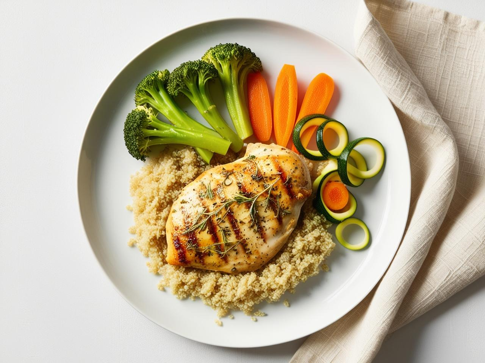
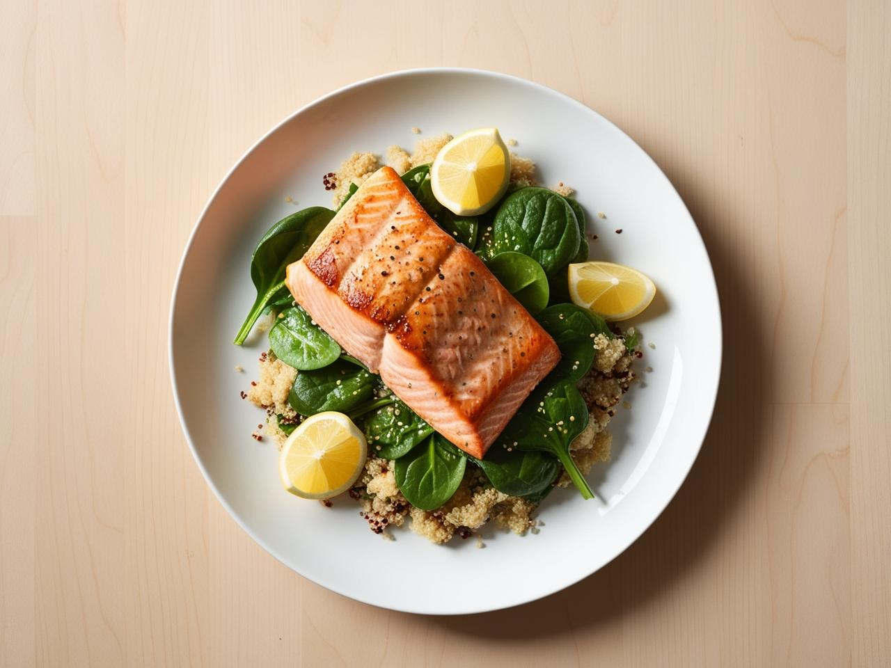
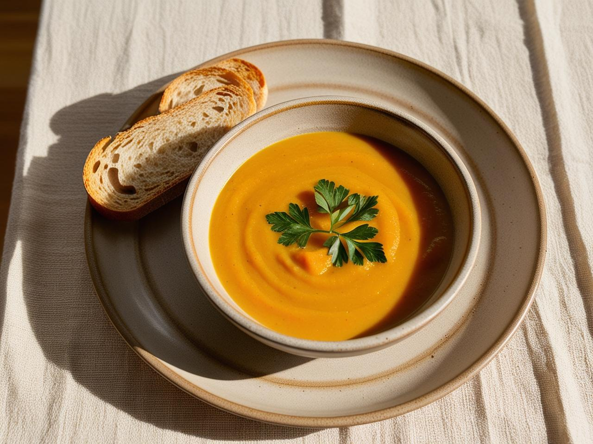
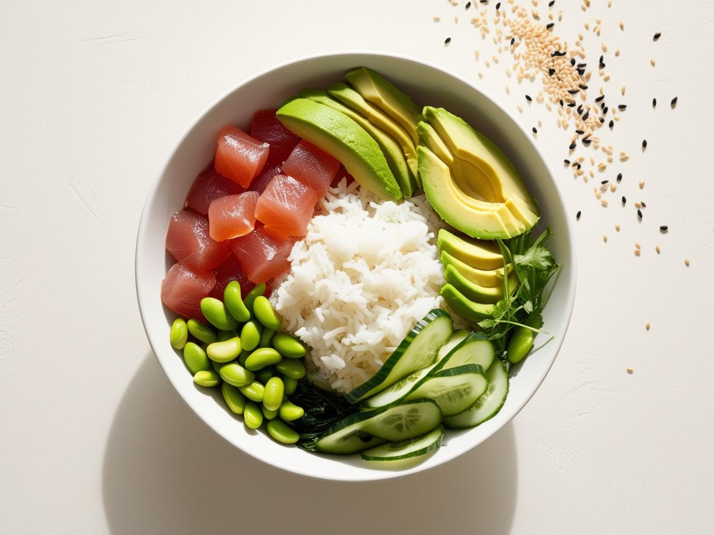
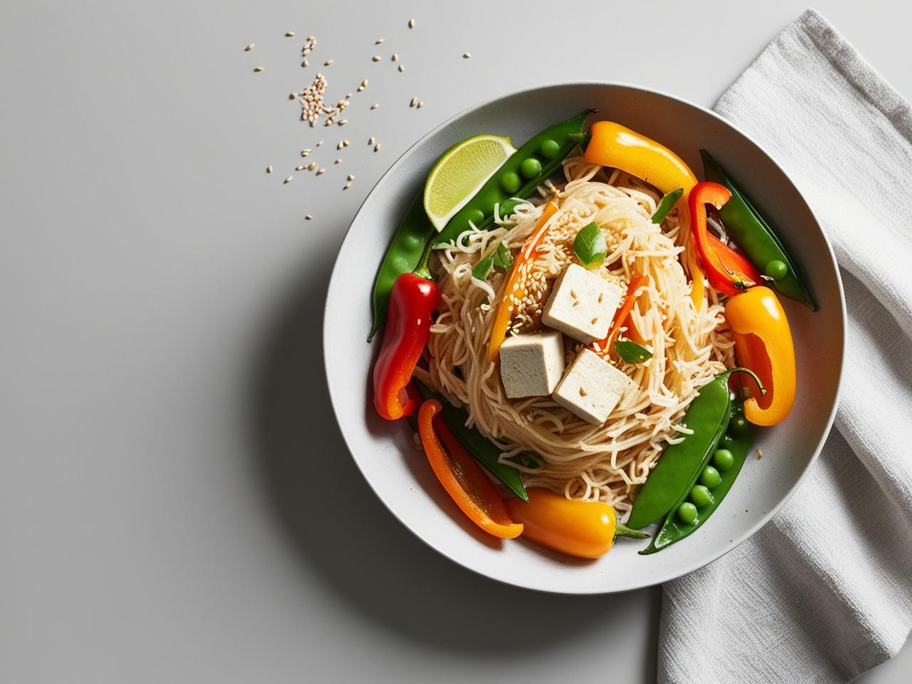

Куряча грудка з кіноа та овочами на пару
Інгредієнти:- • 1 куряча грудка
- • ½ склянки кіноа
- • Броколі, морква, кабачок
- • Оливкова олія, сіль, перець
- 1. Кіноа зварити у підсоленій воді 15 хв.
- 2. Курку обсмажити або приготувати на грилі.
- 3. Овочі приготувати на пару.
- 4. Подати все разом, полити олією.

Лосось на грилі з салатом із шпинату та кіноа
Інгредієнти:- • 1 філе лосося
- • ½ склянки кіноа
- • Жменя шпинату
- • 1 ч. л. оливкової олії
- • Лимон, кунжут — для подачі
- 1. Лосось обсмажити або запекти у духовці.
- 2. Кіноа зварити.
- 3. Змішати шпинат з кіноа, полити олією та лимоном.
- 4. Подати з лососем і посипати кунжутом.

Овочевий суп-пюре з тостом
Інгредієнти:- • 2 моркви
- • 1 цибулина
- • 1 картоплина
- • Овочевий бульйон або вода
- • Цільнозерновий тост
- 1. Нарізати овочі, варити до м’якості.
- 2. Збити у блендері.
- 3. Посолити, поперчити. Подати з тостом.

Поке з тунцем, рисом та овочами
Інгредієнти:- • 100 г вареного рису
- • 80 г свіжого тунця
- • Огірок, авокадо, морква
- • Соєвий соус, кунжут, лимон
- 1. Нарізати овочі та рибу кубиками.
- 2. У миску викласти рис, рибу та овочі.
- 3. Полити соусом, посипати кунжутом.

Стир-фрай з тофу та рисовою локшиною
Інгредієнти:- • 100 г рисової локшини
- • 100 г тофу
- • Болгарський перець, броколі
- • Соєвий соус, кунжутна олія
- 1. Локшину замочити або відварити.
- 2. Тофу та овочі обсмажити.
- 3. Додати локшину, трохи соусу, перемішати.